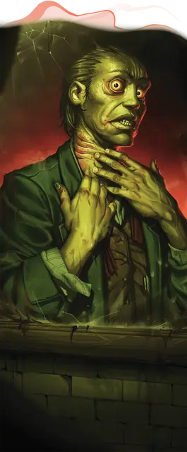

Аберрантная анатомия
Aberrant Anatomy
Черта Тёмного дара (Требования: кампания в Равенлофте)

Контакт с инопланетными ужасами — например, с обитателями Дальнего Предела — исказил вашу физическую оболочку сверхъестественным образом. Вы получаете следующие преимущества:
Бездыханный. Вы можете задерживать дыхание на 1 час.
Экстрасенсорное восприятие. Вы получаете владение навыком Восприятие, если у вас его нет. Вы также получаете Экспертность в этом навыке.
Вдобавок у вас есть Слепое зрение дальностью 15 футов.
Мутирующая плоть. Сразу после того, как при совершении вами Теста к20 на к20 выпадает «1», пронизывающая ваше тело аберрантная скверна вырывается наружу и перехватывает контроль над плотью. Совершите спасбросок Телосложения (Сл 13 + ваш Бонус владения); при провале вы Ошеломлены до конца вашего следующего хода.